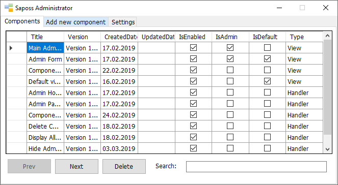
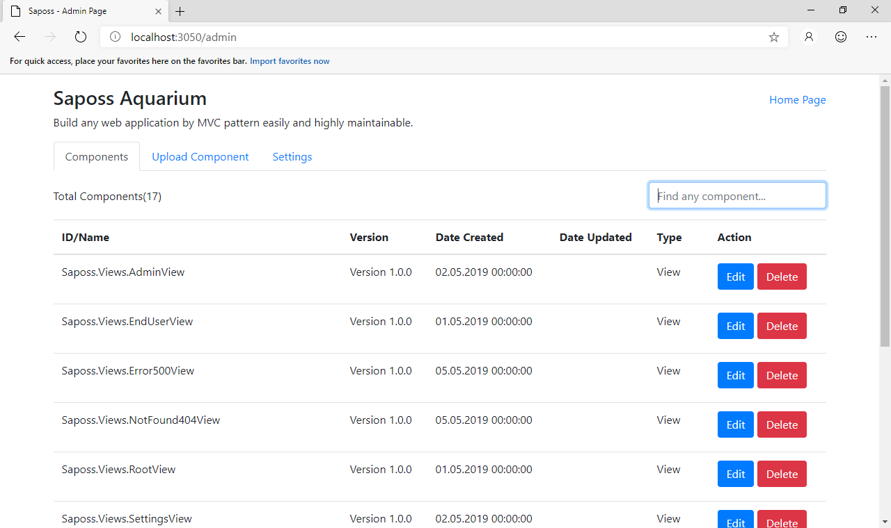

Quick Tour
Both Saposs WF and Aquarium offers you three simple pages/forms to use:
- Start Page.
- Administrator Page.
- Default Page.
Start Page
Here you can navigate to the administrator page or default page as screenshot.
For Saposs WF:

For Saposs Aquarium:

Administrator Page
Here you're able to manage all software components and configure settings as screenshot.
For Saposs WF:

For Saposs Aquarium:

Default Page
Here is a default page which will be shown to end-users. You can update this page later.
For Saposs WF:

For Saposs Aquarium: